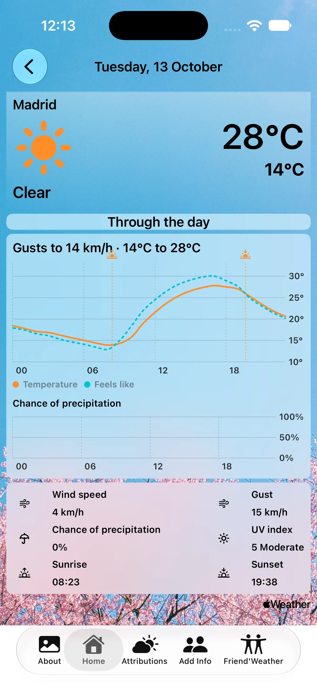
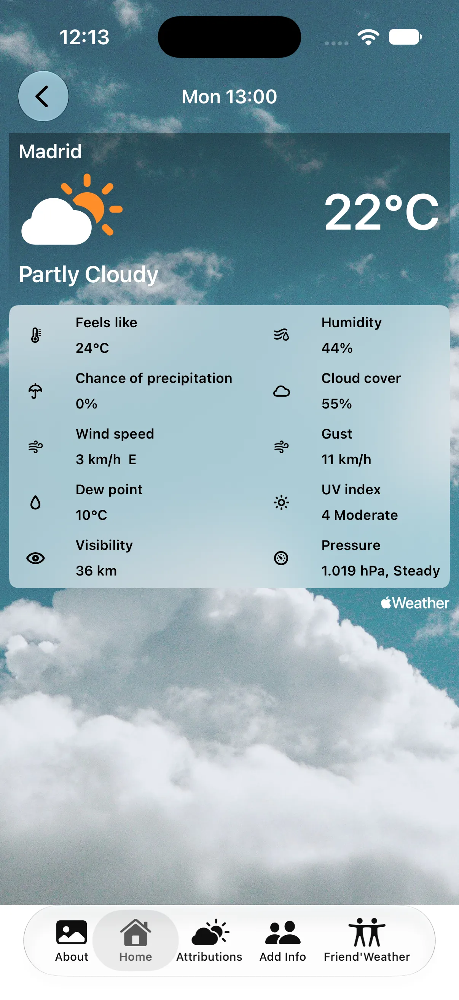

October 12, 2026
Every day in the 9-day forecast and every hour in the 24-hour one opens into a screen of its own. Friends can be placed by coordinates. Requires iOS 26.
In 1.1 the forecast cards open. Every day in the 9-day forecast and every hour in the 24-hour one leads to a screen of its own.


Tap a day in the 9-day forecast and it opens: temperature and feels-like charted hour by hour, chance of precipitation, sunrise and sunset marked on the chart, wind and gusts, UV index, and a one-line summary of the day composed from the data — "Rain likely 14:00–18:00 · Gusts to 52 km/h · 4 °C to 11 °C".
Tap an hour in the 24-hour forecast for what the card leaves out: feels-like, humidity, cloud cover, dew point, UV index, visibility and pressure.
Both work on your own weather and on every friend's, in their time zone. A day in Oslo is Oslo's day.
Some places have no address. Type the latitude and longitude into the search field — "40.5017, -3.7020" — and Pacheco finds the nearest place, or keeps the point itself where there is no address at all.
1.0 ran on iOS 17.2; 1.1 requires iOS 26. Part of that is the place
search, which now uses MapKit's iOS 26 address and reverse-geocoding calls in
place of the older placemark and CLGeocoder ones.
Pacheco on the
App Store — free, for iPhone, iOS 26 or later.
Pacheco in the browser — any device, nothing to
install.
Questions, corrections, or just to say it worked for you — write to me at commonerdev [at] gmail.com.
12 de octubre de 2026
Cada día del pronóstico de 9 días y cada hora del de 24 horas se abren en una pantalla propia. Los amigos se pueden situar por coordenadas. Requiere iOS 26.
En la 1.1 las tarjetas del pronóstico se abren. Cada día del pronóstico de 9 días y cada hora del de 24 horas llevan a una pantalla propia.
Pulsa un día del pronóstico de 9 días y se abre: temperatura y sensación térmica hora a hora en una gráfica, probabilidad de precipitación, amanecer y atardecer marcados en la gráfica, viento y rachas, índice UV, y un resumen del día en una línea compuesto a partir de los datos: «Lluvia probable 14:00–18:00 · Rachas de hasta 52 km/h · De 4 °C a 11 °C».
Pulsa una hora del pronóstico de 24 horas para ver lo que no cabe en la tarjeta: sensación térmica, humedad, nubosidad, punto de rocío, índice UV, visibilidad y presión.
Las dos funcionan con tu tiempo y con el de cada amigo, en su zona horaria. Un día en Oslo es el día de Oslo.
Hay sitios que no tienen dirección. Escribe la latitud y la longitud en el campo de búsqueda —«40.5017, -3.7020»— y Pacheco encuentra el lugar más cercano, o conserva el punto tal cual donde no hay dirección alguna.
La 1.0 funcionaba en iOS 17.2; la 1.1 requiere iOS 26. Parte de eso es la
búsqueda de lugares, que ahora usa las llamadas de dirección y
geocodificación inversa de MapKit de iOS 26 en lugar de las antiguas de
placemark y CLGeocoder.
Pacheco en el
App Store — gratis, para iPhone, iOS 26 o posterior.
Pacheco en el navegador — en cualquier dispositivo,
sin instalar nada.
Preguntas, correcciones, o solo para contarme que te funcionó: escríbeme a commonerdev [at] gmail.com.